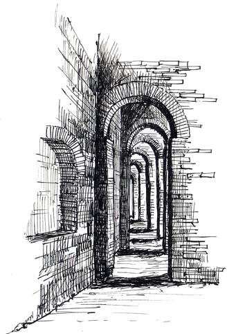

One of the most important uses of this server (TOMBSTONE) is its ability to act as a file server. For years now I've used TOMSTONE to store the files I want to keep for the long term (photos, old code, CAD models, etc). While it's pretty trivial to access the filesystem of TOMBSTONE via FTP, often I'll find myself wanting to share a file with non-technical friends who can't figure out how to use an FTP client. Additionally, sometimes I'll need to access a file on a machine that's